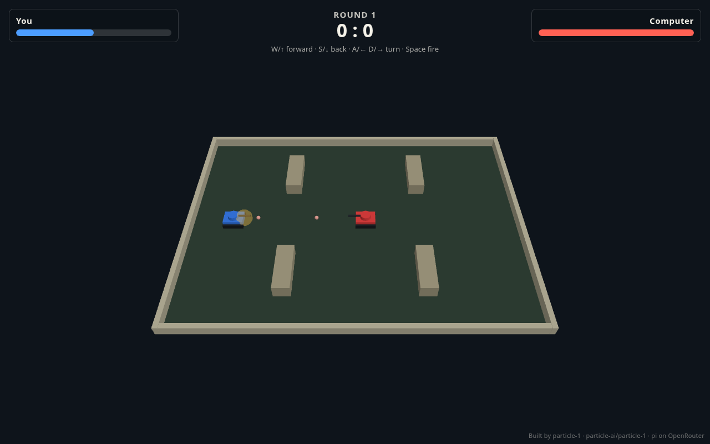
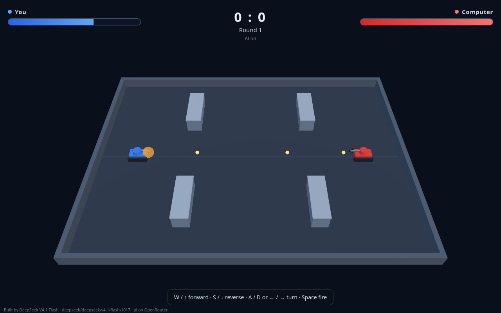

pi benchmark: particle-1 vs DeepSeek V4.1 Flash
Two models, run through the pi agent CLI on OpenRouter at maximum thinking, each building the same three things from the same prompt: the three.js tank game Tank Duel, a 2D Tower Bridge you can zoom, and a 2D Taj Mahal you can zoom, drawn from a photo the model has to read. The two zoomable pages are pure JavaScript, HTML and CSS with no library.
One run per model and task. A single run can be luck, so read the gaps as a first look, not a ranking. These pi runs cannot be compared with setups A to G on the main page: there a separate reviewer model checked every build and Claude dollars were billed, and a round meant a build or a repair. Here one pi session builds and tests its own work until its own suite is green, with no reviewer, and I graded it afterwards.
Tank Duel
The same spec and test setup as the first benchmark. Both games passed all 14 hidden checks, which no model saw, so on quality it is a tie. Particle-1 finished four times faster at under half the cost.
| Model | Time | Speed | Output tokens | Rounds | Cost | Code / tests | Checks |
|---|---|---|---|---|---|---|---|
| particle-1 | 5 min 8 s | 449 tok/s | 53,345 | 2 | $0.20 | 821 / 268 | 14/14 |
| deepseek-v4.1-flash-1017 | 20 min 19 s | 205 tok/s | 132,816 | 3 | $0.48 | 1,148 / 434 | 14/14 |

deepseek-v4.1-flash-1017
Tower Bridge, zoomable
Both pages passed all 20 of my checks: the zoom, pan, buttons, bad input, window resize and no console errors. On looks, DeepSeek's is clearly closer to the real bridge: its chains droop from the tower tops to the shore towers, it has a skyline and water reflections, and at 5× it shows trusses and gold joint plates under the deck. Particle-1's chains arch above the deck like an arch bridge, its river leaves cream margins at the window edges and its walkway is a plain box, though zoomed in it adds cars and lamp posts. Particle-1 was 3.6 times faster; it was cheaper at DeepSeek's full price, but DeepSeek was cheaper at the price it was billed.
| Model | Time | Speed | Output tokens | Rounds | Cost | Code / tests | Checks |
|---|---|---|---|---|---|---|---|
| particle-1 | 3 min 14 s | 499 tok/s | 57,880 | 1 | $0.16 | 997 / 105 | 20/20 |
| deepseek-v4.1-flash-1017 | 11 min 39 s | 260 tok/s | 121,240 | 2 | $0.20 ($0.14 billed) | 1,360 / 105 | 20/20 |
Taj Mahal, from a photo
The Tower Bridge prompt again, but the building is in a photo attached to the message: each model had to read the photo and draw it in code, with no image file, no <img> and no data:image in the page. Both pages passed my six image checks. DeepSeek passed all 20 zoom checks; particle-1 passed 19, because its pan moves the view the opposite way from what my check expected. On looks it is split. Particle-1 follows the photo's composition and proportions more closely: a dome with a spire, four minarets with balconies, the portal, the pool and the cypress avenue. DeepSeek adds more detail (inlaid flowers, a calligraphy band, lattice windows, visitors) but its proportions drift: a huge portal, a small dome and thin minarets. Particle-1 was 2.2 times faster and cheaper at the full price; DeepSeek was cheaper at the price it was billed, because the whole run came after 10:00 UTC.
| Model | Time | Speed | Output tokens | Rounds | Cost | Code / tests | Checks |
|---|---|---|---|---|---|---|---|
| particle-1 | 10 min 0 s | 238 tok/s | 79,019 | 3 | $0.30 | 911 / 134 | 25/26 |
| deepseek-v4.1-flash-1017 | 22 min 25 s | 139 tok/s | 129,470 | 4 | $0.35 ($0.17 billed) | 1,893 / 127 | 26/26 |
How these runs were made
- Each model ran once per task in a fresh copy of the seed, through the pi CLI (
pi -p --thinking max) with OpenRouter, at the same time as the other, with the same prompt. The model tests its own work withbash test/gate.shuntil the suite is green. I re-ran the suite and graded the page afterwards. - Time is the whole session. Speed is output tokens, thinking included, divided by the time the model spent generating. Rounds counts the suite runs up to and including the first green one; a model that goes green first time has one.
- Cost is the token counts times OpenRouter's list price (particle-1 $0.25 in and $1.00 out per million tokens; DeepSeek $0.30 and $1.20), not billed amounts. DeepSeek halves its price on weekends and on weekdays at 00 to 01, 04 to 06 and from 10:00 UTC; the Tower Bridge run crossed 10:00 UTC and the Taj Mahal run came wholly after it, so both show the flat price and the price it was billed.
- Code / tests counts non-blank lines. The tests are Python (the seed's Playwright suite); the games are JavaScript, HTML and CSS, and Tank Duel loads three.js as its spec requires.
- Tank Duel is graded by the same 14 hidden checks as the first benchmark. Tower Bridge is graded by 20 checks of mine, written after both runs finished, and by looking at the pages. Taj Mahal gets those 20 plus 6 image checks: no image file in the checkout, no source naming an image, no image element, no image loaded, the signature line, no console errors.
- For Taj Mahal the photo was attached to the pi message and is not in the checkout. Before the runs a probe showed both models receive it and name the building. The signature is in the prompt this time:
Built by <your own name> · <model id> · pi on OpenRouter. Particle-1 wrote its own name; DeepSeek wrote “pi”, the agent's name. The photo is not published here. - Rule slips: I told the models not to read or write outside their checkout. In Tank Duel both read the machine's WebMCP skill notes; in Tower Bridge DeepSeek wrote a helper script to
/tmp; in Taj Mahal both read the WebMCP skill notes again. Nothing was copied from another run. - Each model signed its own work afterwards: a separate short pi session per work, the same model at maximum thinking, asked to add its name and model id as a small visible line. The signatures are not in the times, tokens, costs or code counts above; the suites and checks were re-run after signing and gave the same results. The screenshots show the signed pages.
- The numbers, prompts, sources and scripts are in the repository under
benchmarks/pi-*andscripts/pi.